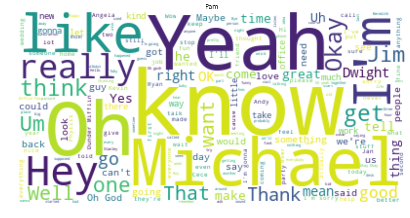

Python Text Analysis With the Schrutepy Package
LinkedIn | Github | Blog | Subscribe

Following the success of the {schrute} R package, many requests came in for the same dataset ported over to Python. The schrute and schrutepy packages serve one purpose only: to load the entire transcripts from The Office, so you can perform NLP, text analysis or whatever with this fun dataset.
Quick start
Install the package with pip:
pip install schrutepyThen import the dataset into a dataframe:
from schrutepy import schrutepy
df = schrutepy.load_schrute()That’s it. Now you’re ready.
Long example
Now we’ll quickly work through some common elementary text analysis functions.
from schrutepy import schrutepy
from wordcloud import WordCloud, STOPWORDS, ImageColorGenerator
import matplotlib.pyplot as plt
from matplotlib.pyplot import figure
import nltk
from nltk.corpus import stopwords
from PIL import Image
import numpy as np
import collections
import pandas as pdLoad the entire transcript with the load_schrute function
df = schrutepy.load_schrute()Inspect the data
df.head()|
|
index |
season |
episode |
episode_name |
director |
writer |
character |
text |
text_w_direction |
|---|---|---|---|---|---|---|---|---|---|
|
0 |
1 |
1 |
1 |
Pilot |
Ken Kwapis |
Ricky Gervais;Stephen Merchant;Greg Daniels |
Michael |
All right Jim. Your quarterlies look very good… |
All right Jim. Your quarterlies look very good… |
|
1 |
2 |
1 |
1 |
Pilot |
Ken Kwapis |
Ricky Gervais;Stephen Merchant;Greg Daniels |
Jim |
Oh, I told you. I couldnt close it. So… |
Oh, I told you. I couldnt close it. So… |
|
2 |
3 |
1 |
1 |
Pilot |
Ken Kwapis |
Ricky Gervais;Stephen Merchant;Greg Daniels |
Michael |
So youve come to the master for guidance? Is … |
So youve come to the master for guidance? Is … |
|
3 |
4 |
1 |
1 |
Pilot |
Ken Kwapis |
Ricky Gervais;Stephen Merchant;Greg Daniels |
Jim |
Actually, you called me in here, but yeah. |
Actually, you called me in here, but yeah. |
|
4 |
5 |
1 |
1 |
Pilot |
Ken Kwapis |
Ricky Gervais;Stephen Merchant;Greg Daniels |
Michael |
All right. Well, let me show you how its done. |
All right. Well, let me show you how its done. |
Some of the records don’t contain dialogue
df = df.dropna()Create a wordcloud of all the text in the entire series
text = " ".join(review for review in df.text)print ("There are {} words in the combination of all review.".format(len(text)))There are 3001517 words in the combination of all review.# Create stopword list:
nltk.download('stopwords')
stopWords = set(stopwords.words('english'))
# Generate a word cloud image
wordcloud = WordCloud(stopwords=stopWords, background_color="white").generate(text)
# Display the generated image:
# the matplotlib way:
plt.figure(figsize=[30,15])
plt.imshow(wordcloud, interpolation='bilinear')
plt.axis("off")
plt.show()[nltk_data] Downloading package stopwords to /home/xps/nltk_data...
[nltk_data] Package stopwords is already up-to-date!
Let’s do this same thing for a few of the characters. Might as well make a function at this point…
def plotDunder(character, df):
mydf = df[df.character == character]
text1 = " ".join(review for review in mydf.text)
# Generate a word cloud image
wordcloud = WordCloud(stopwords=stopWords, background_color="white").generate(text1)
# Display the generated image:
# the matplotlib way:
plt.figure(figsize=[15,7])
plt.imshow(wordcloud, interpolation='bilinear')
plt.title(character)
plt.axis("off")
plt.show()
fav = ["Michael", "David Wallace", "Dwight", "Jim", "Pam", "Oscar", "Phyllis", "Creed", "Ryan",]for i in fav:
plotDunder(i, df)
Let’s make on in the shape of Dwight’s large head
dwight_mask = np.array(Image.open("schrutepy.png"))# Create a word cloud image
wc = WordCloud(background_color="white", max_words=1000, mask=dwight_mask,
stopwords=stopWords, contour_width=1, contour_color='grey')
# Generate a wordcloud
wc.generate(text)
# show
plt.figure(figsize=[30,15])
plt.imshow(wc, interpolation='bilinear')
plt.axis("off")
plt.show()
wc.to_file("final_schrute.png")<wordcloud.wordcloud.WordCloud at 0x7fa1036a8b00>Now let’s find and plot the most common word spoken by my favorite characters
def commonWord(character, df):
mydf = df[df.character == character]
text = " ".join(review for review in mydf.text)
wordcount = {}
# To eliminate duplicates, remember to split by punctuation, and use case demiliters.
for word in text.lower().split():
word = word.replace(".","")
word = word.replace(",","")
word = word.replace(":","")
word = word.replace("\"","")
word = word.replace("!","")
word = word.replace("“","")
word = word.replace("‘","")
word = word.replace("*","")
if word not in stopWords:
if word not in wordcount:
wordcount[word] = 1
else:
wordcount[word] += 1
# Print most common word
n_print = int(10)
# print("\nOK. The {} most common words are as follows\n".format(n_print))
word_counter = collections.Counter(wordcount)
for word, count in word_counter.most_common(n_print):
pass
# Close the file
# Draw a bar chart
lst = word_counter.most_common(n_print)
df = pd.DataFrame(lst, columns = ['Word', 'Count'])
df.plot.bar(x='Word',y='Count', title=character)for i in fav:
commonWord(i, df)
Star this repo on Github?

Want more content like this? Subscribe here